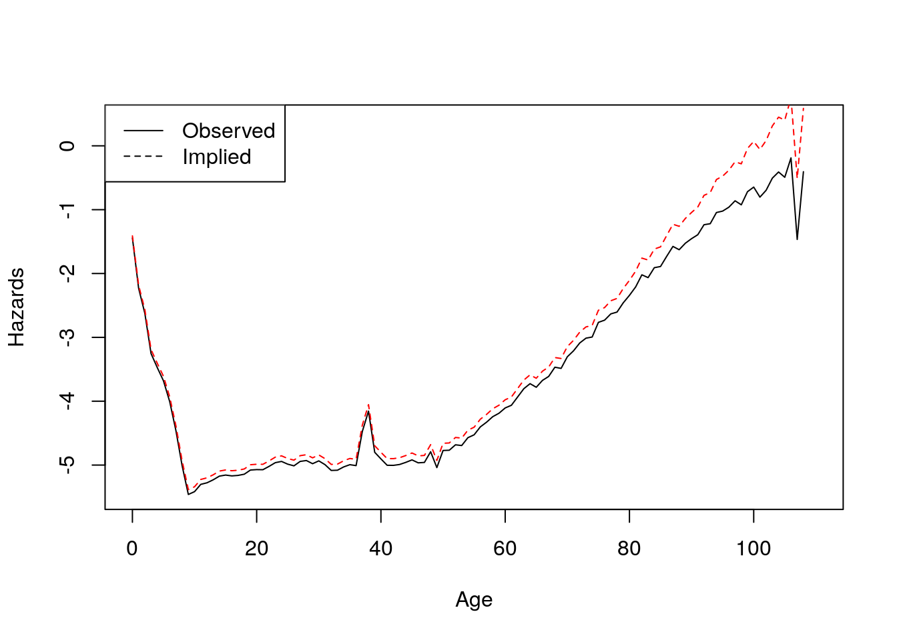

Chapter 5 Convergence and cross-overs
5.1 Outline
- Concepts
- Student Presentation
Additional resources:
5.2 What happens to mortality disparities at older ages?
- Cumulative disadvantage
- Age as a leveler
- Individual adaptation/plasticity, gov support, separation from unequal structures like labor market
- Bad data / measurement
- Unreliable ages, institutionalization changes sample, etc.
- Nothing
- It’s all selection (“frailty”), pop hazards but individual hazards would have remained “parallel”.
Our goal is to examine this last “null hypothesis”. What can
frailty explain, and what can’t it?
5.2.1 A possible null-model
- 2 groups, each with internal gamma-frailty
proportional baseline hazards
\[ \mu_2(x) = R \mu_1(x) \] see V&M (38)
\[ \mu_1(x |z_1) = \mu_1 z_1 \\ \mu_2(x |z_2) = \mu_2 z_2 \]
And, frailty terms are each gamma, with mean 1 and own variances.
5.2.2 A result: (5E)
\[ \bar{R}(x) \equiv {\bar\mu_2(x) \over \bar\mu_1(x)} = {R + R\sigma_1^2 H_1(x) \over 1 + R \sigma_2^2 H_1(x)} \]
Questions:
If variances are equal. What happens at age 0? What happens at very old ages. If the higher mortality group has bigger frailty variance, what happens at older ages?Same if higher mortality group has smaller frailty variance?
Homework: prove this, simulate this. see if cross of is when cumulative hazards satisfy the condition at the end of 5E). (* problem. can you solve for x0 in temrs of variances 1 and 2 and R with gamma gompertz?
5.2.3 Inversion
Our challenge is to invert a not easy pop hazards formula \[ \bar{\mu}(x) = {\mu_0(x) \over 1 + \sigma^2 H_0(x)} \] because we have both hazards and cumulative hazards on right.
Hazards are slope of log survival
Recall for Gamma, \[ \bar{S}(x) = { 1 \over (1 + \sigma^2 H_0(x))^{1/\sigma^2}} \]
We write down the hazard as the derivative of log survival \[ \bar{\mu}(x) = {1 \over \sigma^2} {d \over dx} \log(1 + \sigma^2 H_0(x)). \]
The anti-derivative of both sides, gives \[ \bar{H}(x) = {1 \over \sigma^2} \log(1 + \sigma^2 H_0(x)). \]
And now we have only 1 expression involving the baseline hazards on the right.
Solving \[ \bar{H}(x) = {1 \over \sigma^2} \log(1 + \sigma^2 H_0(x)). \] gives us the cumulative hazard \[ H_0(x) = {1 \over \sigma^2} \left(e^{\sigma^2 \bar{H}(x)} - 1 \right). \]
And differencing, gives us a remarkably simple expression for the baseline hazard in terms of the observed popualtion hazard \[ \mu_0(x) = \bar\mu(x) e^{\sigma_2 \bar{H}(x)} \]
- We don’t observe underlying baseline hazard \(\mu_0\) on left
- What is observed (and unobserved) on right?
5.2.4 An example
library(data.table)
dt <- fread("/hdir/0/fmenares/Book/bookdown-master/data/ITA.cMx_1x1.txt",
na.string = ".")
my.dt <- dt[Year == 1915]
my.dt[, H.f := cumsum(Female)]
my.dt[, H.m := cumsum(Male)]
my.dt[, h.f := Female]
my.dt[, h.m := Male]
sigma.sq <- .5^2
my.dt[, h0.f.5 := h.f * exp(sigma.sq *H.f)]
my.dt[, h0.m.5 := h.m * exp(sigma.sq *H.m)]
sigma.sq <- .2^2
my.dt[, h0.f.2 := h.f * exp(sigma.sq *H.f)]
my.dt[, h0.m.2 := h.m * exp(sigma.sq *H.m)]
sigma.sq <- 1^2
my.dt[, h0.f1 := h.f * exp(sigma.sq *H.f)]
my.dt[, h0.m1 := h.m * exp(sigma.sq *H.m)]Italian Females, born 1915 (\(\sigma^2 = .2^2, .5^2, 1^2\))
par(mfrow = c(1,2))
foo <- my.dt[, plot(Age, H.f, col = "red")]
title("Cumulative Hazards\n Italian Females born 1915")
foo <- my.dt[, plot(Age, log(h.f), type = "l", ylim = c(-7, 2), col = "red",
main = "Observed vs. implied baseline")]
foo <- my.dt[, lines(Age, log(h0.f.2), lty = 2, col = "red")]
foo <- my.dt[, lines(Age, log(h0.f.5), lty = 3, col = "red")]
foo <- my.dt[, lines(Age, log(h0.f1), lty = 4, col = "red")]
legend("topleft", legend = c("baseline", "obs if s2 = .2^2", "obs if s2 = .5^2", "obs if s2 = 1^2"),
col = "red", lty = 1:4)
Italian Females vs Males born 1915 (\(\sigma^2 = .5^2\))
par(mfrow = c(1,2))
## title("Cumulative Hazards\n Italian Females born 1915")
foo <- my.dt[, plot(Age, log(h.f), type = "l", ylim = c(-7, 2), col = "red",
main = "Observed vs. implied baseline")]
foo <- my.dt[, lines(Age, log(h0.f.5), lty = 2, col = "red")]
ugh <- my.dt[, lines(Age, log(h.m), type = "l", col = "blue")]
ugh <- my.dt[, lines(Age, log(h0.m.5), lty = 2, col = "blue")]
legend("topleft", legend = c("female observed",
"female baseline",
"male observed",
"male baseline"),
col = c("red","red", "blue", "blue"), lty = c(1,2, 1,2))
## now do difference
foo <- my.dt[, plot(Age, h.m/h.f, type = "l", col = "black",
ylab = c("h.m/h.f"),
main = "Male-female hazard ratio")]
foo <- my.dt[, lines(Age, h0.m.5/h0.f.5, lty = 2)]
legend("topright", legend = c("observed",
"implied baseline"),
## col = c("red","blue"),
lty = 1:2)
Much bigger convergence in ``observed’’ than in baseline
5.2.5 Application
5.3 Student Presentation
References
Coale, Ansley J, and Ellen Eliason Kisker. 1986. “Mortality Crossovers: Reality or Bad Data?” Population Studies 40 (3). Taylor & Francis: 389–401.
Manton, Kenneth G, and Eric Stallard. 1981. “Methods for Evaluating the Heterogeneity of Aging Processes in Human Populations Using Vital Statistics Data: Explaining the Black/White Mortality Crossover by a Model of Mortality Selection.” Human Biology. JSTOR, 47–67.